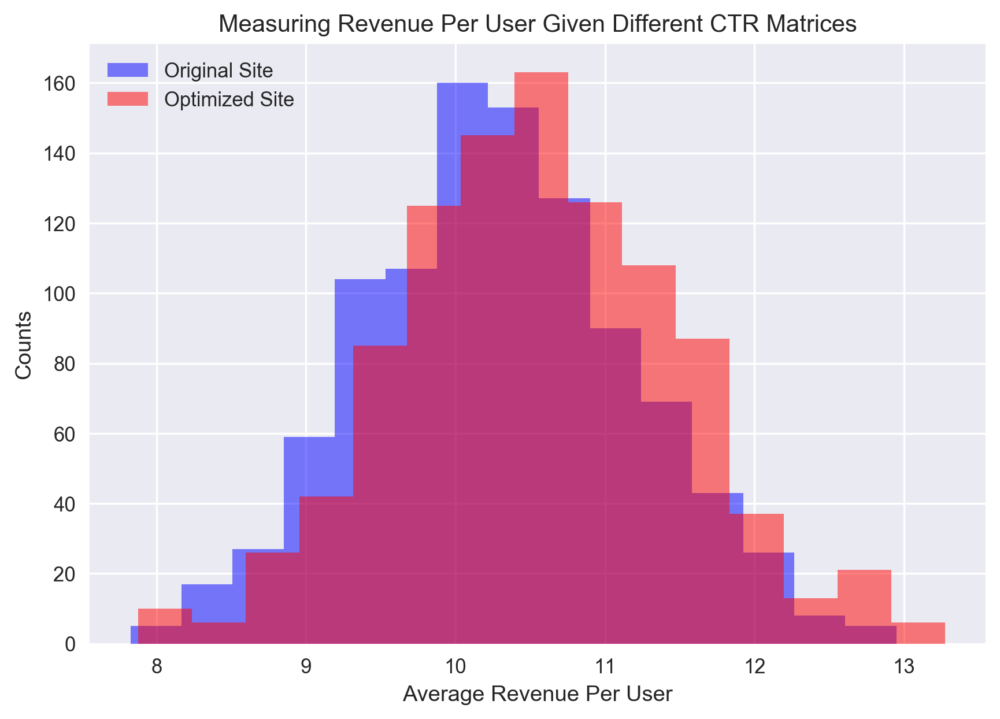

What is a Monte Carlo Simulation (Part 5)
Feb. 17, 2018 - PythonThis is part 5 of a several part series dedicated to investigating how Monte Carlo can be a great tool. Part 1 introduces the concept of Monte Carlo. Part 2 teaches us how to do MC in Python. Part 3 explores how we can use Monte Carlo to attempt to outplay the odds in Video Poker. Part 4 attacks the problem of trying to do particle physics simulations with Monte Carlo. If you haven't read those yet, I recommend you start there.
Using Monte Carlo to Measure Business Impact
In all the previous parts of this series on Monte Carlo techniques, we've focused on the techniques and how we can use them in sort of niche settings. However, in part 1, I mentioned that this is a really powerful technique for real world applications. Today, we'll focus on one such case. Let's imagine that your company pays a consulting group to come in and optimize your website for audience retention. They run their analysis and proudly announce that they've found a way to direct 10% more traffic from your frequently asked questions page back to your main website. Essentially, cutting your bounce rate from that page by 10%. That's amazing, right? A retention upgrade of 10% is a solid step up, and much larger than most businesses will ever see. The consulting firm charges you and arm-and-a-leg for this analysis and result. Was it worth it?Your initial instinct is that, well as long as their rate was less than 10% of my revenue, I come out on top. But it's not so clear. They've only optimized one page, and they haven't optimized on sales but on audience retention. How does this actually change your bottom line overall? Is it a 10% increase? Is it even a noticeable increase at all? How can you convert their optimization back to monetary gain? We're going to do it using Monte Carlo techniques in this notebook on Measuring Business Impact with MC. 